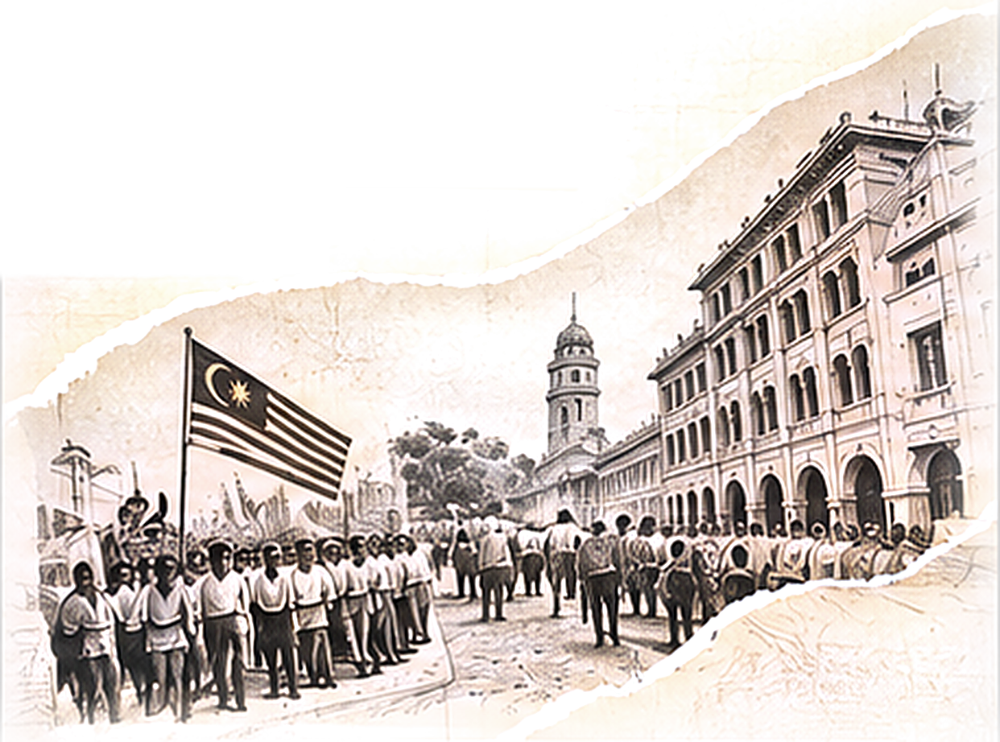
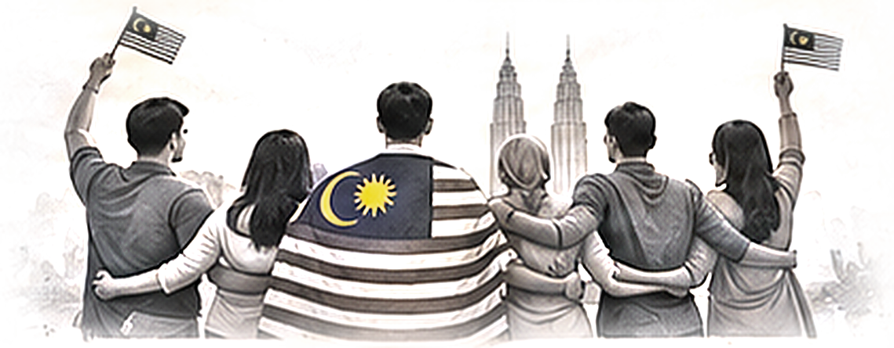

01 / 04
Patriotisme
Semangat
Patriotisme
Patriotisme
Bagi saya, semangat patriotisme bukan hanya ditunjukkan ketika menyambut hari kebangsaan.
02 / 04
Bukan Sekadar
Jalur Gemilang

MERDEKA!
Bukan sekadar mengibarkan Jalur Gemilang atau melaungkan perkataan merdeka.
03 / 04
Patriotisme Sebenar
Melalui Tindakan
Tapi patriotisme perlu diterjemahkan melalui tindakan, dengan menghormati antara satu sama lain, menjaga keharmonian masyarakat, memelihara perpaduan, serta melaksanakan tanggungjawab kita sebagai rakyat Malaysia.
04 / 04
Berbeza Tapi Satu
BANGSA
AGAMA
BUDAYA
Satu Identiti

Walaupun kita berbeza bangsa, agama dan budaya, kita tetap mempunyai satu identiti yang sama.